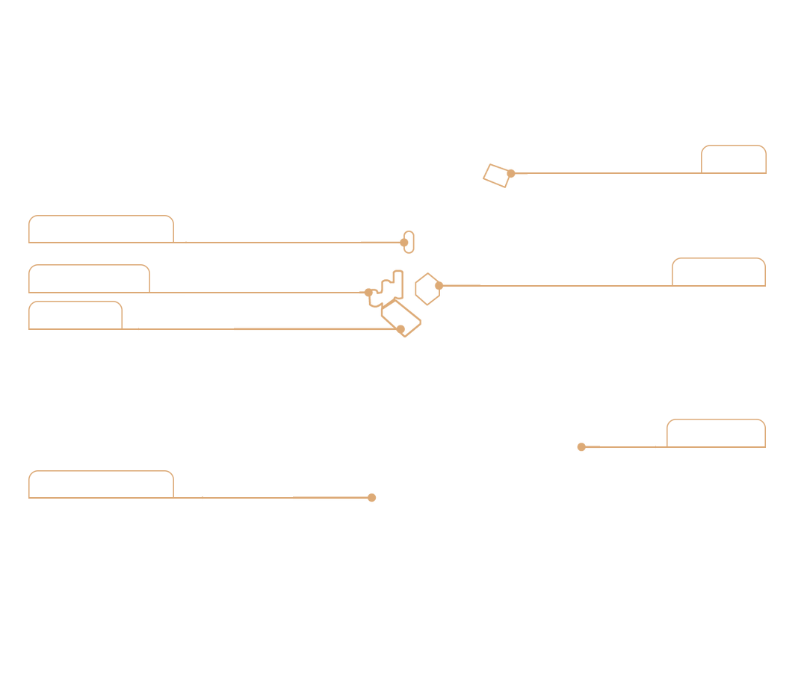
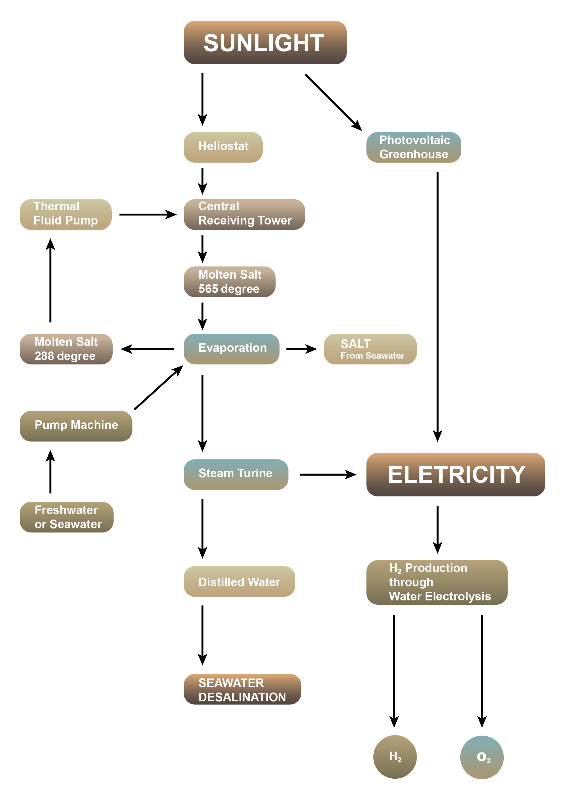

Integrated Renewable Energy Power Plants ( I. R. E. P. P.)
Introduction
The I.R.E.P.P. mainly consists of a C.S.P. Plant and aPV Plant.The C.S.P. Plant uses heliostats to reflect sunlight on to the central receiving tower, generating high temperatures of around 800°C that heat up solid salt to 565°C to become molten salt.
The I.R.E.P.P. sets a new benchmark for environmentally friendly renewable energy projects, integrating cutting-edge technologies into a comprehensive and sustainable cycle by holistically addressing the energy production, storage, and transportation lifecycle and safely and effectively managing byproducts.


I.R.E.P.P. Work Flow
Salt has a high specific heat capacity transfer coefficient and an excellent storage medium. It can effectively capture and store heat energy and transport it to the top of the tower, where the heated salt reacts with freshwater to produce steam that drives the steam turbine to generate electricity.
The reacted molten salt is then circulated back to the top of the tower by a thermal fluid pump. At night, the system stores the heat generated during the day in a molten salt storage tank, significantly slowing the cooling rate and ensuring stable power generation for 11 to 15 hours at night.
Electricity
The PV Plant directly converts sunlight into electricity through transparent photovoltaic glasses on the greenhouse roof.
Agriculture
The internal space of the system is equivalent to that of an agricultural greenhouse. This system works with the C.S.P. Plant to maximize the overall energy output.
Animal Husbandry & Fishery
High-quality grasslands and fish ponds can be cultivated by entirely using the vacant land area while also providing environmental greening.
Seawater Desalinnations & Salt
If seawater is used, the evaporation of seawater after the reaction can also produce salt and support the salt industry.
O2
O₂ will be produced during Green H₂ production, and it can be collected and widely used in industries such as steelmaking, water treatment, and medical applications.
